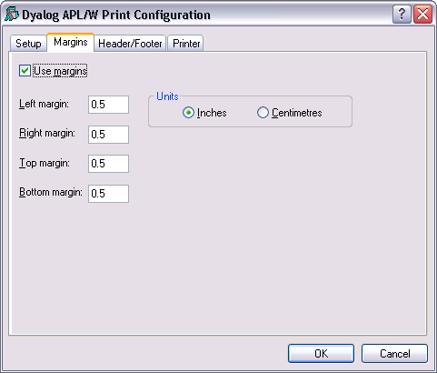
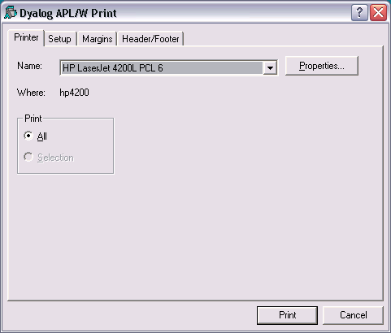

The Print Configuration dialog box is displayed by the system operation [PrintSetup] that is associated with the File/Print Setup menu item. It is also available from Edit windows and from the Workspace Explorer and Find Objects tools.
There are four separate tabs namely Setup, Margins, Header/Footer and Printer.
Note that the printing parameters are stored in the Registry in the Printing sub-folder
Table 66: Print Configuration dialog: Setup
| Label | Parameter | Description |
|---|---|---|
| Color scheme | InColour | Check this box if you want to print functions with syntax colouring. Note that that printing in colour is slower than printing without colour. |
| Color scheme | SchemeName | Select the colour scheme to be used for printing. |
| This text | WrapWithText | Check this option button if you wish to prefix wrapped lines (lines that exceed the width of the paper) with a particular text string |
| This text | WrapLeadText | Specifies the text for prefixing wrapped lines |
| This many spaces | WrapWithSpaces | Check this option button if you wish to prefix wrapped lines with spaces. |
| This many spaces | WrapLeadSpaces | Specifies the number of spaces to be inserted at the beginning of wrapped lines. |
| Line numbers on functions | LineNumsFns | Check this box if you want line numbers to be printed in defined functions. |
| Line numbers on variables | LineNumsVars | Check this box if you want line numbers to be printed in variables. If you choose this option, line numbering starts at ⎕IO. |
| Font | Font | Click to select the font to be used for printing. Note that only fixed-pitch fonts are supported. |

Table 67: Print Configuration dialog: Margins
| Label | Parameter | Description |
|---|---|---|
| Use margins | UseMargins | Check this box if you want margins to apply |
| Left margin | MarginLeft | Specifies the width of the left margin |
| Right margin | MarginRight | Specifies the width of the right margin |
| Top margin | MarginTop | Specifies the height of the top margin |
| Bottom margin | MarginBottom | Specifies the height of the bottom margin |
| Inches | MarginInch | Specifies that the margin units are inches |
| Centimetres | MarginCM | Specifies that the margin units are centimetres |

Table 68: Print Configuration dialog: Header/Footer
| Label | Parameter | Description |
|---|---|---|
| Header | DoHeader | Specifies whether or not a header is printed at the top of each page |
| Header | HeaderText | The header text |
| Footer | DoFooter | Specifies whether or not a footer is printed at the bottom of each page |
| Footer | FooterText | The footer text |
| Prefix functions with | DoSepFn | Specifies whether or not text is printed before each defined function |
| Prefix functions with | SepFnText | The text to be printed before each defined function. This can include its name, timestamp and author |
| Prefix variables with | DoSepVar | Specifies whether or not text is printed before each variable. |
| Prefix variables with | SepVarText | The text to be printed before each variable. This can include its name. |
| Prefix other objects with | DoSepOther | Specifies whether or not text is printed before other objects. These include locked functions, external functions, ⎕NA functions, derived functions and namespaces. |
| Prefix other objects with | SepOtherText | The text to be printed before other objects. This can include its name. |
The specification for headers and footers may include a mixture of your own text, and keywords which are enclosed in braces, e.g. {objname}. Keywords act like variables and are replaced at print time by corresponding values.
Any of the following fields may be included in headers, footers and separators.
| {WSName} | {WS} | Workspace name |
| {NSName} | {NS} | Namespace name |
| {ObjName} | {OB} | Object name |
| {Author} | {AU} | Author |
| {FixDate} | {FD} | Date function was last fixed |
| {FixTime} | {FT} | Time function was fixed |
| {PrintDate} | {PD} | Today's date |
| {PrintTime} | {PT} | Current time |
| {CurrentPage} | {CP} | Current page number |
| {TotalPages} | {TP} | Total number of pages |
| {RightJustify} | {RJ} | Right-justifies subsequent text/fields |
| {HorizontalLine} | {HL} | Inserts a horizontal line |
| {CarriageReturn} | {CR} | Inserts a new-line |
For example, the specification:
Workspace: {wsname} {objname} {rj} Printed {PrintTime} {PrintDate}
would cause the following header, footer or separator to be printed at the appropriate position in each page of output:
Workspace: U:\WS\WDESIGN WIZ_change_toolbar Printed 14:40:11 02 March 1998

Table 69: Print Configuration dialog: Print
| Label | Parameter | Description |
|---|---|---|
| Name | PrinterField | The name of the printer to be used for printing from Dyalog APL. |
| Properties | Click this to set Printer options. | |
| Where | Reports the printer device | |
| Allows you to choose between printing all of the current object or just the selection. Note that this option is present only when the dialog box is displayed in response to selecting Print. |